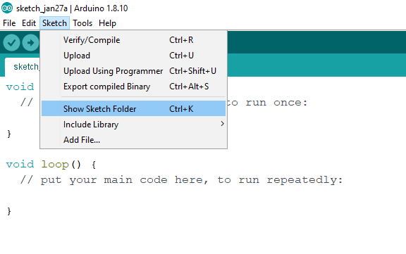
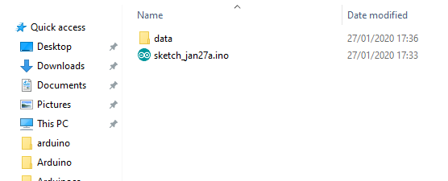

ESP8266

SPIFFS
Subiendo archivos al sistema
ESP8266FS es una herramienta que se integra en el IDE de Arduino. Agrega un elemento de menú al menú Herramientas para cargar el contenido de una carpeta de datos de un sketch en el sistema de archivos de la memoria flash del ESP8266.
-
Descarga la herramienta:
ESP8266FS-0.5.0.zip . -
En
Documentos > Arduino (carpeta de sketchs), cree la carpetatools si aún no existe. -
Descomprima la herramienta en el carpeta tools en:
Documentos/Arduino/tools/ESP8266FS/tool/esp8266fs.jar
Si está actualizando, sobrescriba el archivo JAR existente con la versión más nueva. -
Reinicie Arduino IDE.
-
Abra un sketch.
-
Vaya al menú sketch (seleccione Sketch> Show Sketch Folder).

-
Cree una carpeta llamada
data e introduzca cualquier archivo que desee cargar al sistema de archivos. -
Seleccione su placa, su puerto y cierre el monitor serie.
-
Si su placa requiere que presione un botón (u otra acción) para iniciar el modo de carga, púlselo ahora.
-
Seleccione
Select Tools > ESP8266 Sketch Data Upload . Esto debería comenzar a cargar los archivos en el sistema de archivos de la memoria flash ESP8266. Cuando termine, la barra de estado IDE mostrará el mensaje:SPIFFS Image Uploaded